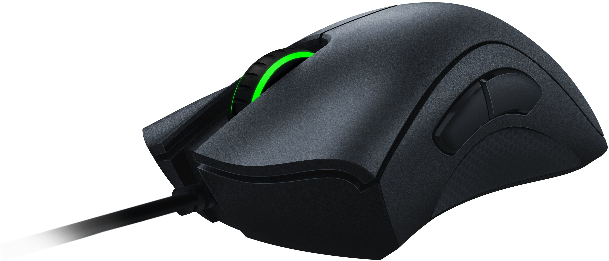

HyperX Alloy Origins 2 65

Kompaktowa klawiatura mechaniczna 65% z podświetleniem RGB, stworzona dla graczy.
339,00 zł
Dowiedz się więcej
Kompaktowa klawiatura mechaniczna 65% z podświetleniem RGB, stworzona dla graczy.
339,00 zł
Dowiedz się więcej
Ergonomiczna mysz gamingowa z optycznym sensorem 6400 DPI i pięcioma programowalnymi przyciskami.
99,00 zł
Przewodowe słuchawki gamingowe z dźwiękiem przestrzennym 7.1, podświetleniem RGB i odpinanym mikrofonem.
249,00 zł